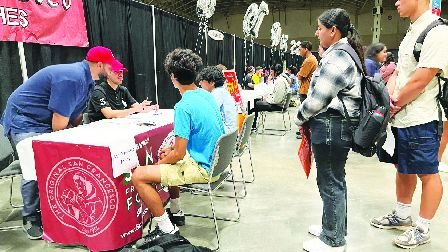

加国劳动力市场转为疲软。（明报图片）
加拿大皇家银行（RBC）经济学刊发表的最新一周经济预测发现，加拿大7月的就业报告确认加国劳动力市场将进入疲软期。
报告说，进入夏季以后，加拿大就业增长大幅放缓，7月只新增工作岗位1.5万个，由于人口仍在快速增长，失业率可能会从6月的6.4%继续上升至7月的6.5%。2020年初疫情爆发前，这一比例为5.6%，而在疫情后的2022年夏季劳动力需求旺盛期间，这一比例降至5%以下。
总体看，多个前瞻性指标几乎都没显示雇用需求复苏的迹象。近月职位空缺持续下降，在加拿大央行第二季度前景调查中，接受调查的企业对于明年的招工和投资意图表现低迷。
尽管就业增长放缓，但报告中的工资增长数据仍保持在高水准，这与其他地方的调查数据相矛盾。根据加拿大中央银行商业前景调查，随著雇用需求的回落，企业对工资增长的预期也大幅放缓。总体而言，该行预期薪资增长将趋于下降，并认为这不会加剧未来的通胀。这应该会平息加拿大央行的担忧，同时继续降息。
RBC经济预览还预测：
．加拿大出口6月预计下降了0.4%，进口下降了0.6%，导致6月加国贸易赤字收窄至17亿元。具体看，机动车货运量下降加上油价下跌导致贸易流量放缓；
．食品和饮料领导的出口商品种类更广泛，而更高的进口主要被工业品供应增加支撑，抵消汽车进口下降。
经济专家和分析师鼓励加人放眼长远，特别是对于关心退休储蓄的投资人而言。LendingTree高级经济师钱内尔（Jacob Channel）表示，「通常情况下，在市场飘红的日子里恐慌性抛售比节省储蓄损失更多的钱，我提醒投资者，市场已经从比目前更严重的抛售中恢复过来。」
Alex Wu, Local Journalism Initiative Reporter